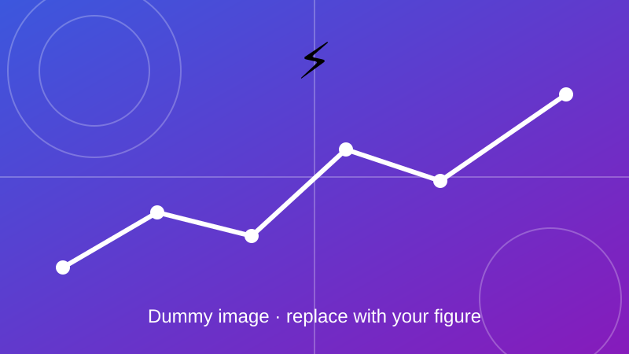

Impact Analysis of EV Charging Infrastructure at IIT Kanpur
Assessing how EV charging infrastructure affects the IIT Kanpur distribution network.

Overview
This project studies the impact of EV charging infrastructure on the IIT Kanpur distribution network through time-series power-flow analysis, EV charging-demand modelling, and evaluation of voltage deviations, transformer loading and network hosting capacity.
Objectives
- Model the daily EV charging demand on campus.
- Quantify voltage deviation along the feeders over time.
- Check transformer loading and estimate how many EVs the network can host.
Method and key equations
Charging demand is built from individual charging sessions and added to the base load of each bus. A time-series power flow then gives bus voltages and transformer loading for every time step.
\(R_i\) and \(X_i\) are the feeder resistance and reactance up to bus \(i\), \(P_i\) and \(Q_i\) the net active and reactive power at that bus, and \(V_0\) the nominal voltage.
\(N\) vehicles each draw \(P_{\mathrm{ch},k}\) while charging; \(u_k(t)\in\{0,1\}\) says whether vehicle \(k\) is charging at time \(t\).
Transformer loading is the apparent power through the transformer divided by its rated capacity \(S_{\mathrm{rated}}\).
Outcome
Add your results here: key findings, figures, and links to the related paper or code.